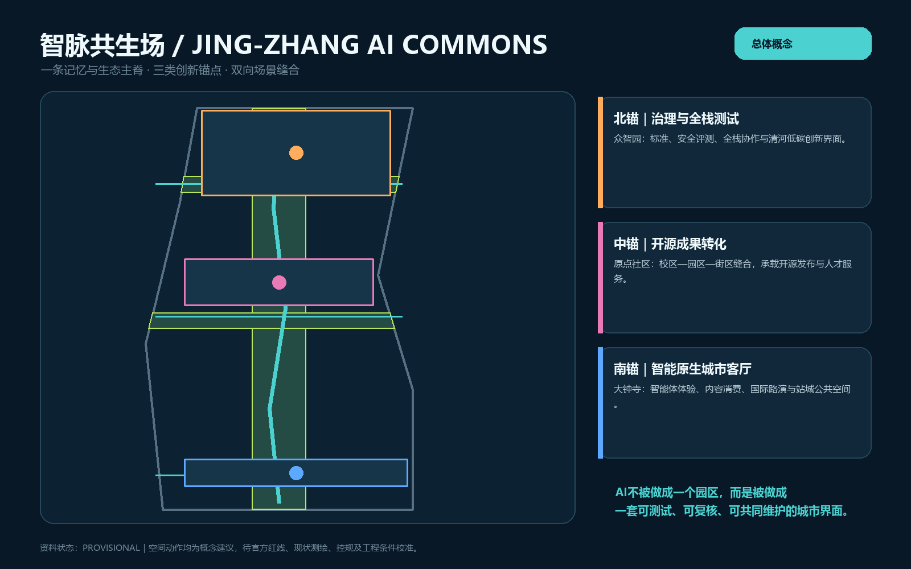
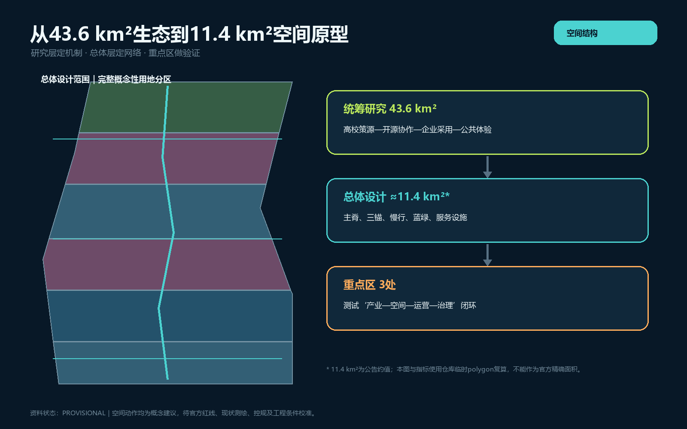
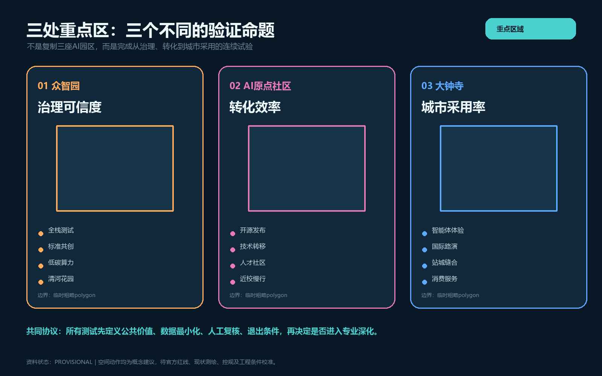
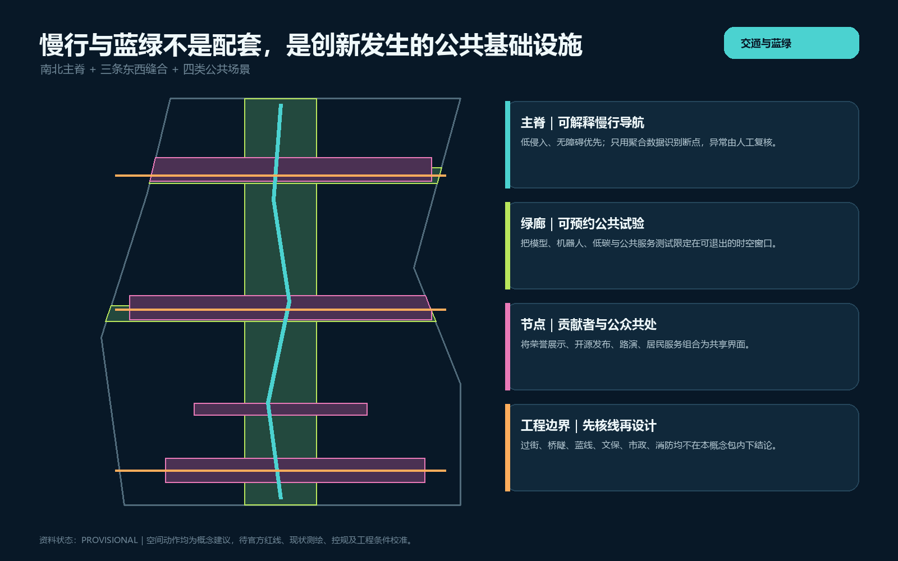
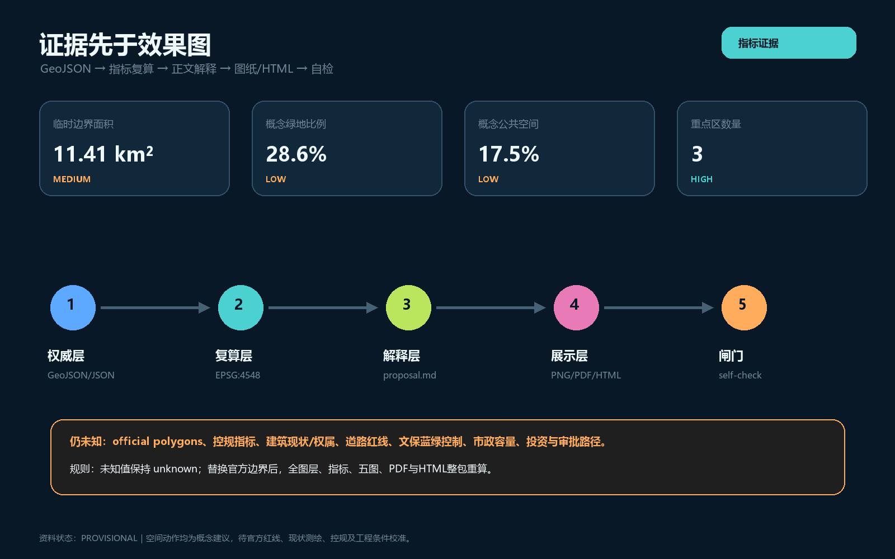

让AI不只占据产业空间，而成为一套可测试、可解释、可退出、由城市共同维护的公共界面。


43.6 km²统筹研究：生态与区域协同。
约11.4 km²总体设计：一脊、三锚、慢行蓝绿和服务网络。
三处重点区：治理测试、成果转化、城市采用三类命题。


10组概念性建筑基底只表达“可复用/可补植”的空间类型，不构成具体地块拆改留、建设规模、层数、高度或产权判断。
12张场景卡，含3项产业测试；共同遵守最小数据、人工复核、版本追溯和退出条件。
安全红队机器人共行端侧低碳开源里程贡献者里程厅、场景预约协议、公共问题清单、低侵入导视。
官方边界、权属、控规、文保、交通、市政和审批条件确认后，才进入专业深化。
| 任务 | 方案落点 |
|---|---|
| agent.1 | 命名、视觉识别、一脊三锚 |
| agent.2 | 六案例、生态机制、全栈与采用 |
| agent.3 | 12场景、3测试、5画像 |
| agent.4 | 三朝圣节点、公共组件库 |
| agent.5 | 铁路—中关村—开放智能三幕叙事 |
| agent.6 | 年度四季运营与转化路径 |

结构化校验、空间校验、视觉封装与专业证据检查以本地self-check结果为准。
官方公告、清权agent任务书、本地专业标准快照、来源登记表、临时边界；全球案例仅作背景机制对照。
official polygons、控规指标、现状建筑与权属、道路红线、文保/蓝绿控制、市政容量、投资和审批路径均待补。